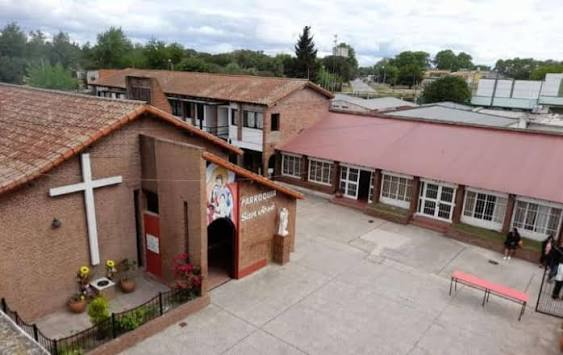
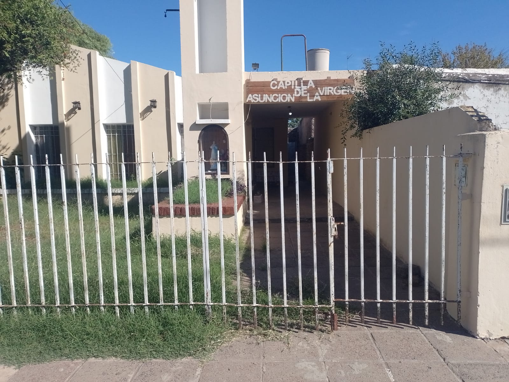
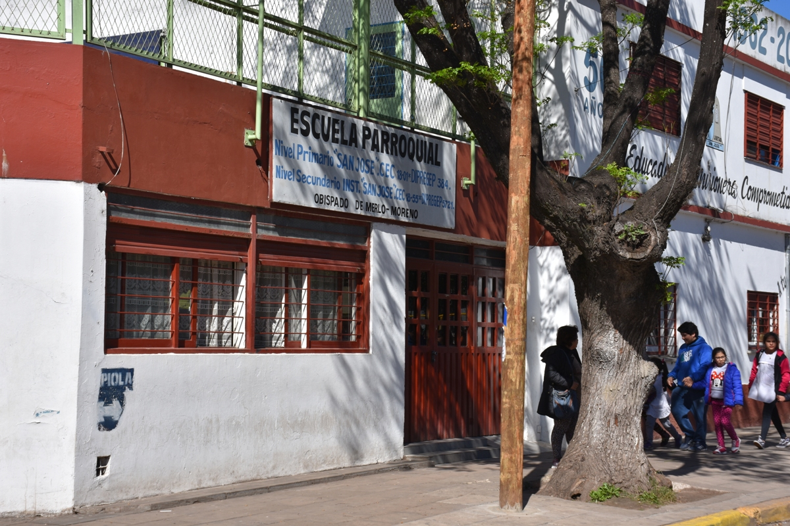
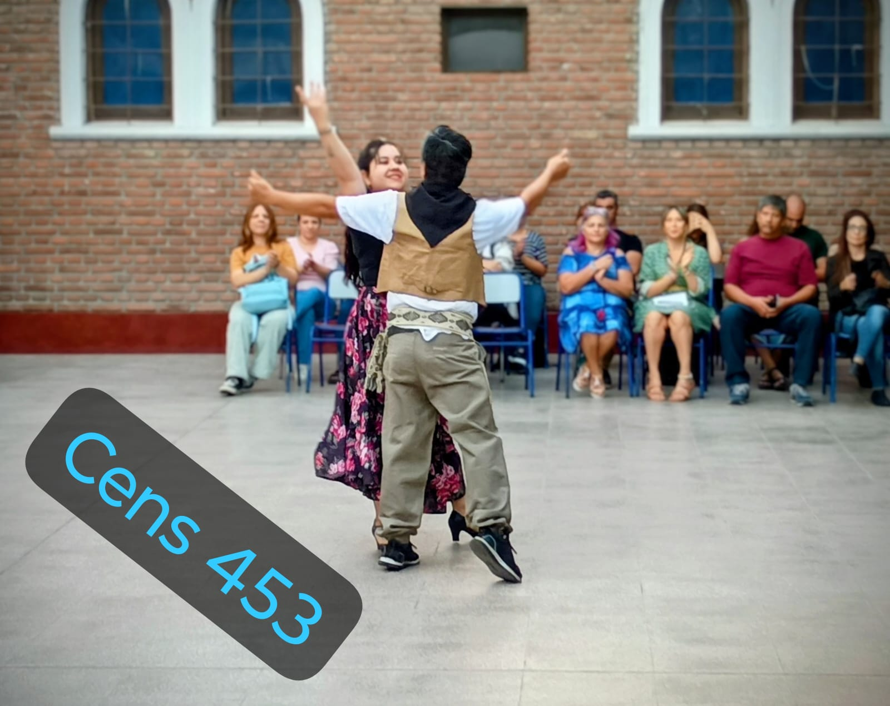
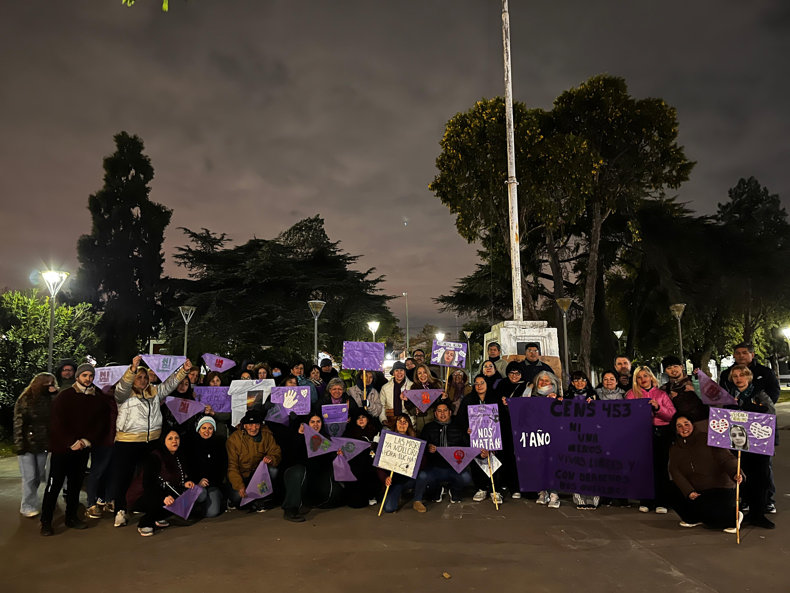
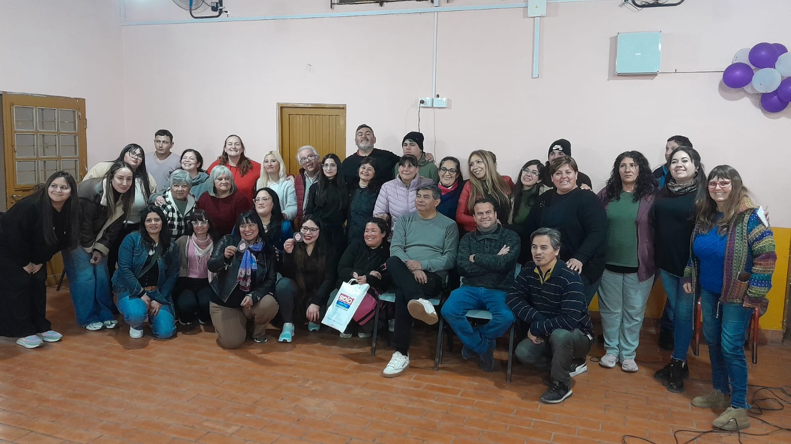
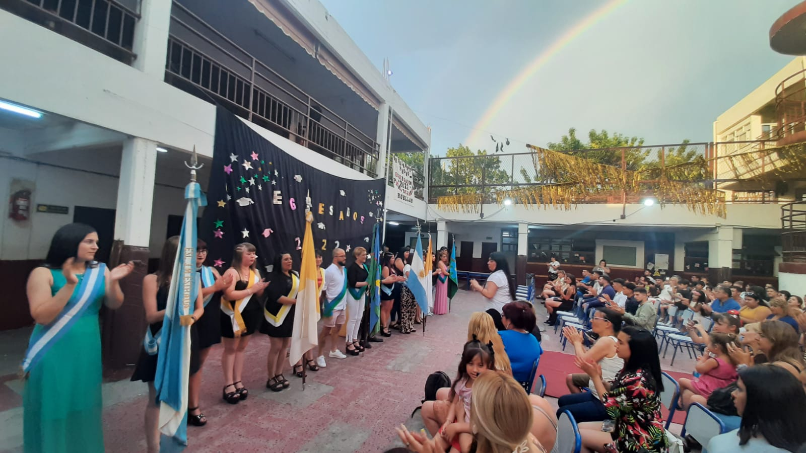
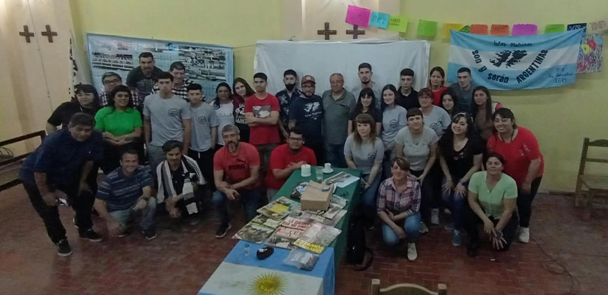
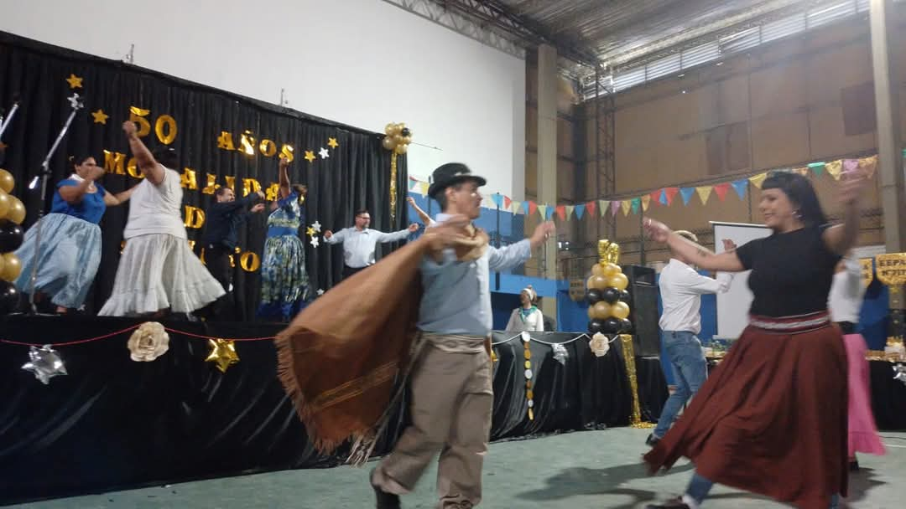

Inscripciones
En Noviembre Arrancan
las Inscripciones 2027
Más información →Ya están abiertas las inscripciones para el ciclo lectivo 2027.
Consultar informaciónSecundaria para jóvenes y adultos en Libertad, Merlo.
En Noviembre Arrancan
las Inscripciones 2027
Más información →Funcionamos en 3 puntos de Libertad
Ver sedes →Conocé el trabajo de nuestros estudiantes
Ver proyectos →Zapiola 1420, Libertad, Partido de Merlo
Lunes a viernes de 18:30 a 21 hs
Ver ubicación →El CENS N° 453 brinda educación secundaria para jóvenes y adultos en el barrio de Villa Amelia y alrededores, en Libertad, Merlo. Trabajamos en articulación con instituciones barriales, promoviendo la inclusión, el aprendizaje y el desarrollo personal en un ambiente de respeto y compromiso con nuestra comunidad.


Soldado Molina al 2400
(entre Nicaragua y Chile)
Libertad, Merlo

Venezuuela al 600
(entre Nicaragua y Chile)
Libertad, Merlo

Zapiola 1420
(Entre Victor Mercante y Esrada)
Libertad, Merlo
Estudio sobre el trabajo y la diversidad cultural en el Parque Ferroviario
Historias de vida de trabajadores del barrio Villa Amelia
Relevamiento de instituciones y organizaciones del barrio
Desde 1986 acompañamos a jóvenes y adultos de Libertad para que terminen el secundario en su propio barrio, de noche y con un título de validez nacional.
El servicio educativo comienza en agosto, a partir de un convenio firmado con DINEA y la Diócesis de Morón, con el nombre de Centro Educativo de Nivel Secundario Nº 222.
Quienes aprobaban los tres años recibían el título de Perito Auxiliar en Desarrollo de Comunidades, un título secundario nacional que permite continuar cualquier estudio terciario o universitario.
El CENS 222 funcionó en Zapiola 1420, en el edificio de la escuela parroquial, hasta marzo de este año. Tras un análisis de la situación, el Padre Juan Carlos Martinez decidió rescatar los objetivos de su creación y trasladar los cursos a los edificios barriales de Libertad. Desde entonces se cursa en distintas capillas de la parroquia.
A fines de 1993 los CENS pasaron a la provincia de Buenos Aires, bajo la Dirección de Educación Media, Técnica y Agraria.
Los CENS pasan a la Dirección de Educación de Adultos y el nombre cambia a CENS Nº 222, 222/1, 222/2 y 222/3. Después se dividen en cuatro servicios: CENS 451, 452, 453 y 454, todos en su turno habitual de la noche.
A comienzos de año la resolución 6.321/95 modifica el Plan de Estudios. Hasta 1995 el título era Perito Auxiliar en Desarrollo de Comunidades; desde 1996 hasta hoy es Bachiller en Ciencias Sociales, especializado en promoción de comunidades.
El objetivo de la modalidad es promover el crecimiento personal integral y dar herramientas para colaborar en el desarrollo sociocomunitario. Nuestro CENS abarca los barrios Villa Amelia, Barrio Nuevo, Barrio Golf y Villa Spada, con la calle Colombia como columna vertebral que comunica nuestros servicios.
Nuestro CENS es un servicio educativo conveniado: la Parroquia San José, como entidad conveniante del Obispado de Merlo-Moreno, pone los espacios donde se dictan las clases. Por eso los cursos son en capillas de la parroquia.
La cursada es presencial:
El domicilio declarado del CENS es el de la capilla Asunción de la Virgen: es la más histórica y nunca perdió continuidad, porque es donde hay más demanda de estudio.
Por ser un servicio conveniado, el personal docente lo propone la entidad conveniante (el Cura Párroco como representante del Obispado, junto a los directivos) y no asume por acto público. La propuesta se eleva a la S.A.D. (Secretaría de Asuntos Docentes) con el aval de las autoridades, incluida la Inspectora de Educación de Adultos.
Materias y horas semanales de los tres años del secundario. La formación es integral en Ciencias Sociales y está pensada para la modalidad de educación de adultos. Elegí un año para ver sus materias.
Plan de estudios: Resolución Nº 2993/22 – 3463/22 · Título: Bachiller en Ciencias Sociales.
| Materia | Horas semanales |
|---|---|
| Prácticas del Lenguaje I y II | 3 |
| Lenguaje Adicional (Inglés) I y II | 2 |
| Matemática I y II | 3 |
| Biología y Ambiente / Biología y Salud | 3 |
| Tecnología y Prácticas Digitales I y II | 2 |
| Educación Física I y II | 2 |
| Educación Artística (Teatro) I y II | 2 |
| Sociología I y II | 3 |
| Psicología del Desarrollo / Psicología Social e Institucional | 3 |
| D.I.C. y T. | 2 |
| Total semanal | 25 hs |
| Materia | Horas semanales |
|---|---|
| Prácticas del Lenguaje III y IV | 3 |
| Lenguaje Adicional (Inglés) III y IV | 2 |
| Matemática III y IV | 3 |
| Ciencias Sociales III y IV | 3 |
| Física y Fenómenos Naturales / Física y Procesos Productivos | 2 |
| Tecnología y Prácticas Digitales III y IV | 2 |
| Ciudadanía, Sociedad y Cultura / Relaciones Laborales y Orientación Profesional | 2 |
| Educación Física II y IV | 2 |
| Educación Artística (Música) III y IV | 2 |
| Derechos Humanos I y II | 3 |
| Metodología de la Investigación I y II | 3 |
| D.I.C. y T. | 3 |
| Total semanal | 30 hs |
| Materia | Horas semanales |
|---|---|
| Problemática Social Argentina I y II | 3 |
| Prácticas del Lenguaje V y VI | 3 |
| Química y Tecnologías / Química y Sociedad | 2 |
| Matemática V y VI | 3 |
| Lenguaje Adicional (Inglés) V y VI | 2 |
| Tecnología y Prácticas Digitales V y VI | 2 |
| Educación Física V y VI | 2 |
| Educación Artística (Danza) V y VI | 2 |
| Filosofía I y II | 3 |
| Comunicación y Cultura I y II | 3 |
| D.I.C. y T. | 2 |
| Total semanal | 27 hs |
Conocé algunas de las actividades, proyectos y experiencias realizadas por nuestros estudiantes.

Nuestros estudiantes participan en diferentes actividades educativas y comunitarias que permiten relacionar los contenidos aprendidos con la realidad de nuestra comunidad.

A través de los proyectos institucionales, los alumnos pueden investigar, compartir conocimientos y desarrollar propuestas relacionadas con su entorno social y cultural.

La participación de los estudiantes es fundamental para construir una comunidad educativa basada en el respeto, el aprendizaje y el trabajo compartido.

Las actividades permiten a nuestros alumnos acercarse a distintas instituciones y organizaciones de la comunidad, fortaleciendo los vínculos y el compromiso social.

Cada experiencia representa una oportunidad para aprender, intercambiar ideas y desarrollar nuevas herramientas que acompañen el crecimiento personal y educativo.

Desde el CENS 453 promovemos espacios donde los estudiantes puedan participar, expresarse y compartir sus experiencias dentro y fuera de la institución.
¿Querés inscribirte o tenés alguna consulta? Acercate a la sede o escribinos y te respondemos a la brevedad.
Para inscribirte, traé la siguiente documentación a la Sede Libertad:
Zapiola 1420, Libertad, Partido de Merlo
De lunes a viernes, de 18:30 a 21 hs
Comienzan en noviembre
Soldado Adolfo Molina y Nicaragua (Bº Villa Amelia)
11-32133062 (Secretario Diego)